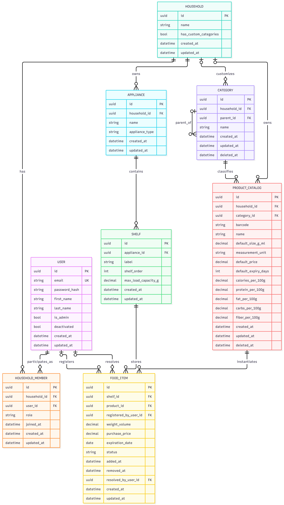

| Login | Heslo | Role |
|---|---|---|
| admin@example.com | password | Administrátor (není èlenem ¾ádné domácnosti) |
| owner@example.com | password | Vlastník domácnosti Novák family |
| manager@example.com | password | Správce domácnosti Novák family, èlen domácnosti Shared flat |
| user@example.com | password | Èlen domácnosti Novák family, vlastník domácnosti Shared flat |
| free@example.com | password | Registrovaný u¾ivatel bez domácnosti (pro pøidání èlena e-mailem) |
| blocked@example.com | password | Zablokovaný úèet (pøihlá¹ení je odmítnuto) |
Pøilo¾te odkaz na komentované video demostrující pou¾ití informaèního systému. Zamìøte se na pøípady u¾ití definované zadáním (napø. registrace u¾ivatele, správa u¾ivatelù a èinnosti jednotlivých rolí). Video nahrajte napøíklad na VUT Google Drive, kde ho bude mo¾né pøímo spustit z odkazu.
Aplikace je postavena na frameworku Laravel 13 (PHP 8.5) s databází MySQL 8. U¾ivatelské rozhraní tvoøí Blade a Livewire 4 komponenty stylované pomocí Tailwind CSS.
routes/web.php - v¹echny routy, zanoøené pod /households/{id}/...app/Http/Controllers - jeden controller pro ka¾dý zdrojapp/Services - aplikaèní logika (Authenticator, UserRegistrar, CatalogCopier, CategoryTree, FoodItemPlacer)app/Policies/HouseholdPolicy - oprávnìní view (èlen) a manage (vlastník/správce); middleware Authenticate a AuthenticateAdminresources/views/components - komponenty UI rozdìlené podle oblastí; interaktivní èásti jsou Livewire komponentytests/Feature - testy v PestPro ponauèení a vyzkou¹ení nové technologie jsme nìkteré èásti (vytvoøení domácnosti, správa èlenù, správa spotøebièù a polic, vyhledávání produktù) implementovali jako Livewire komponenty místo klasických controllerù.
Auth/RegisterController, Services/UserRegistrar, views/auth/registerAuth/LoginController, Auth/LogoutController, Services/Authenticatoruser_id), napojené na Laravel Auth, tak¾e fungují Gate a @can.household/households-listHouseholdController@show, shelf/card, shelf/capacity-bar, food-item/expiry-tag, Livewire household/expiring-soonFoodItemController@store, Livewire product/searchbar, food-item/add-dialog, Services/FoodItemPlacerFoodItemPlacer v transakci uzamkne øádek police a potravinu pøidá jen tehdy, kdy¾ souèet hmotností ulo¾ených potravin a nové potraviny nepøekroèí nosnost police (1 ml = 1 g).FoodItemController@update, FoodItemController@destroy, food-item/rowremoved_at) a u¾ivatel, který ji snìdl nebo vyhodil (resolved_by_user_id); tyto záznamy jsou podkladem pro profil konzumace.Vlastník má v¹echna práva správce a navíc mù¾e správce degradovat nebo odebrat.
household/member-list, pravidla v HouseholdMember::canRemove/canPromote/canDemoteApplianceController, ShelfController, Livewire appliance/manage-listCatalogueController, CategoryController, ProductController, Services/CatalogCopier (kopie výchozího katalogu pøi první úpravì), Services/CategoryTree, components/category/*household_id = NULL), který sdílí v¹echny domácnosti.has_custom_categories a úprava se provede u¾ na kopii; výchozí katalog se tak nikdy nemìní./admin (middleware AuthenticateAdmin), doplnit